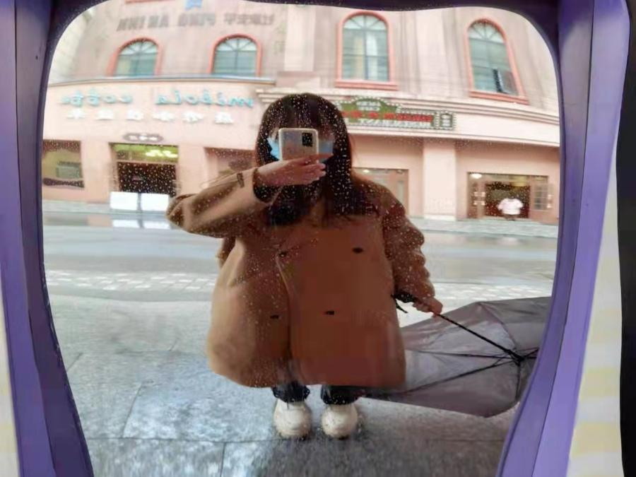
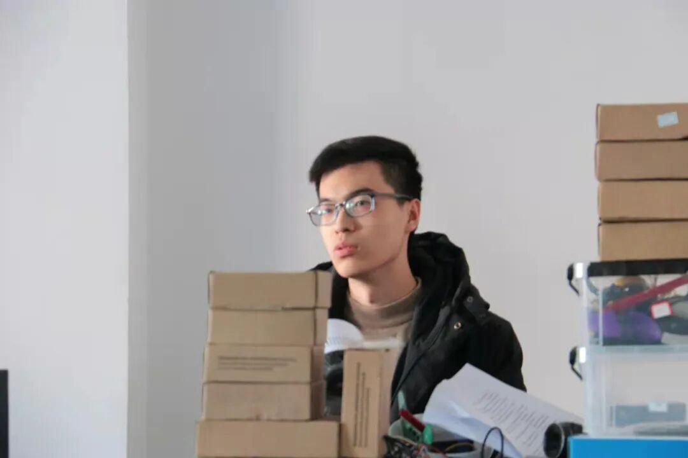
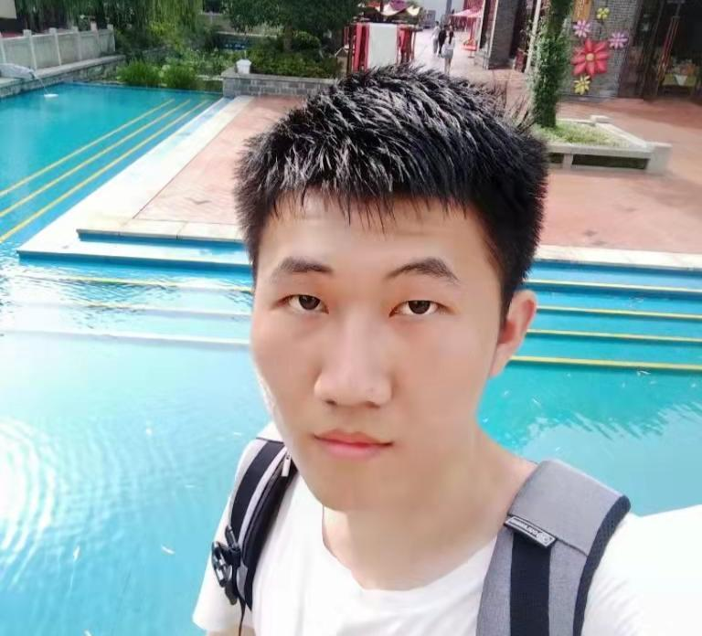

战队硬件组访谈:新学期冲冲冲
战队硬件组访谈
——————
DIAN XIE
硬件组的工作是设计
机器人所用的电路板
如同为机器人绘制出脉络
当电流和信号
在编织成的“经脉”中
传输至机器人各处
自己就会颇有成就感
采访
硬件组 范馨文


范馨文学姐: 学长给我讲硬件画图，和自己第一次打板子成功的时候吧。

范馨文学姐: 天天都挺开心的...要是说最开心还是自己画的板子成功的时候，还有和大家一起嘻嘻哈哈喝茶画图的时候最开心。

范馨文学姐: 以前什么事情只有靠问别人老师教才能学会，来这里最大的收获就是学会了自学吧，知道了效率的重要性，努力在于反复思考反复实践不只是在于时间的长短，就虽然有时候很忙回寝很晚，但是画图和大家一起做比赛，休息的时候说说笑笑很开心所以不会觉得累，每天都很充实。

硬件组 关一郎


关一郎学长: 本着多一门手艺多一门绝活的想法选了硬件部。

关一郎学长: 做出超级电容吧，希望能把超级电容的效率再提升一点。

关一郎学长: 保护好头发，能多学多学，早睡早起多加锻炼。

硬件组 鲍道东


鲍道东: 主要问题是大学课程的学习与电协的事物的平衡，目前我尽量在上课时把知识点掌握，以至能投入更多的时间在学习电控和硬件方面。
鲍道东: 最有意义的事是自己设计了充电模块的板子，之后会打印出来把板子焊好。

鲍道东: 希望电协越办越好，Ambition战队取得更好的成绩。

排版 | 阿甘
审核 | 一只大苗